En duo avec Justine Monseigne, nous avons proposé une nouvelle identité pour la Cuisine Centrale de Toulouse. L’objectif de cette refonte est de remettre au goût du jour l’image de l’organisme, afin de lui donner plus de crédibilité tout en mettant en avant leurs savoir-faire, l’humain ainsi que de revaloriser la qualité de leur production. L’identité visuelle est composée de deux éléments graphiques : une série de cartouches modulables qui s’adresse principalement aux institutions par ses formes strictes et simples ; ainsi qu’une diversité de formes tramées qui représentent la diversité de leurs produits (fruits, légumes, fromage…), au travers d’une gamme colorimétrique gourmande. Une déclinaison de cette identité visuelle a été réalisée sous différents supports, tels que des affiches, cartes de visites, maquette de site, habillage camion…
 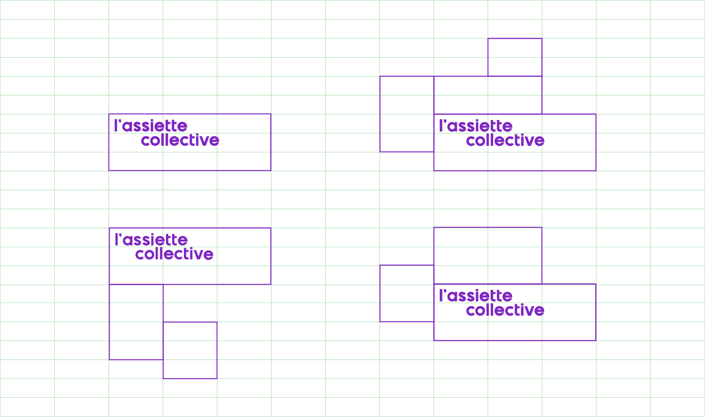
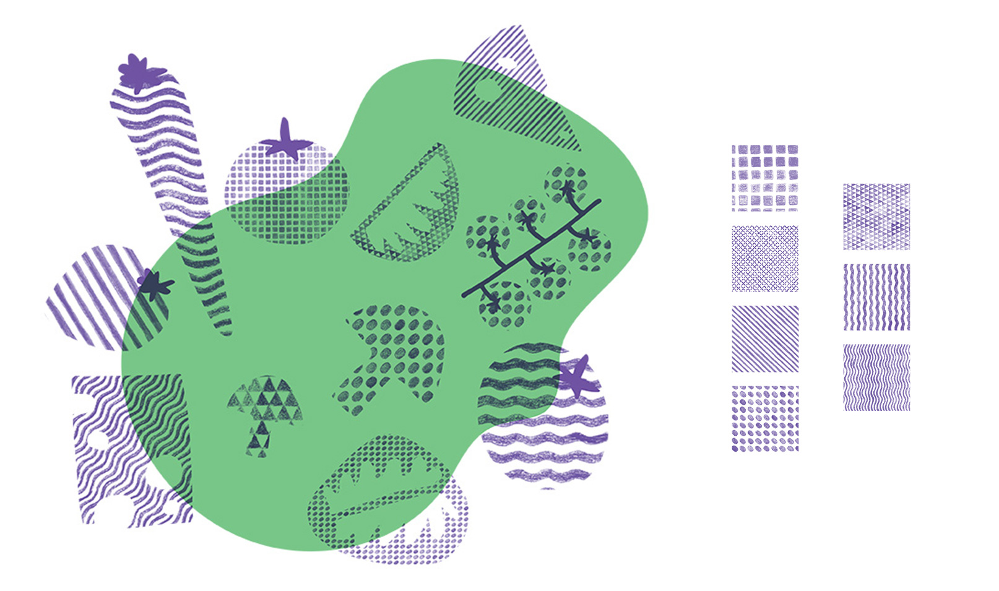
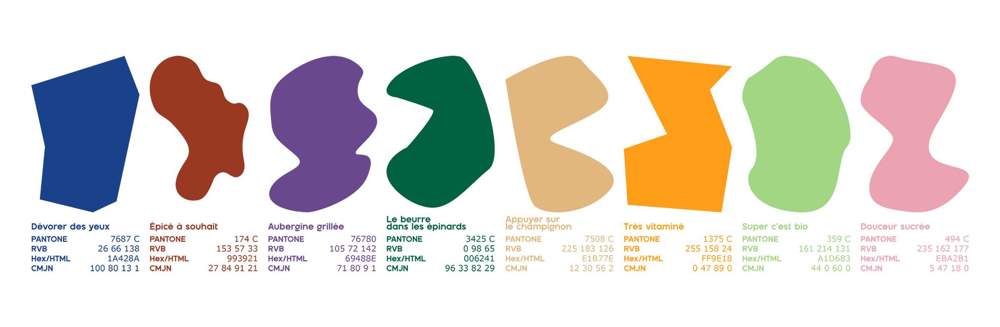
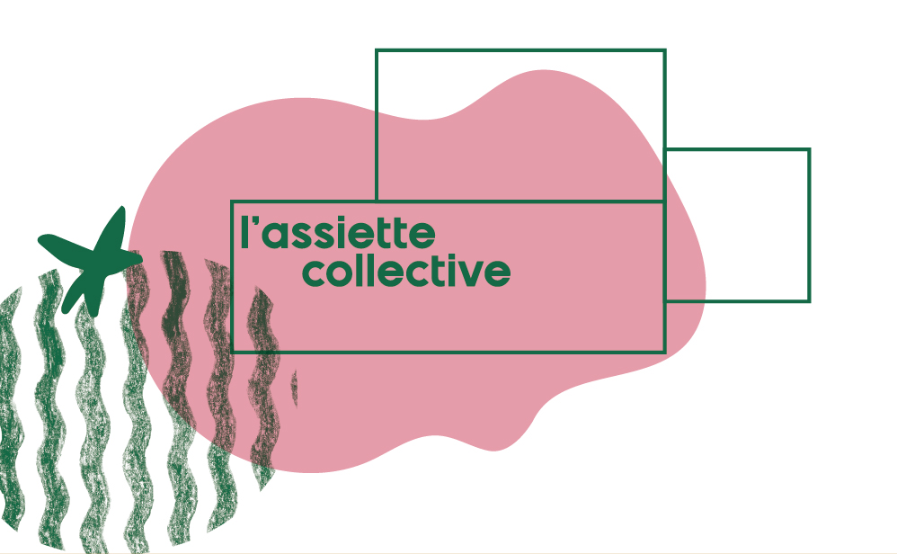
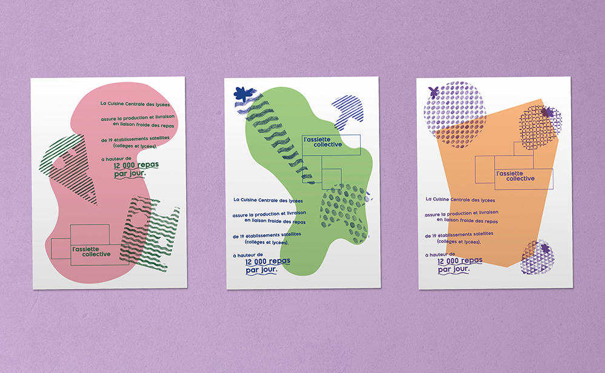
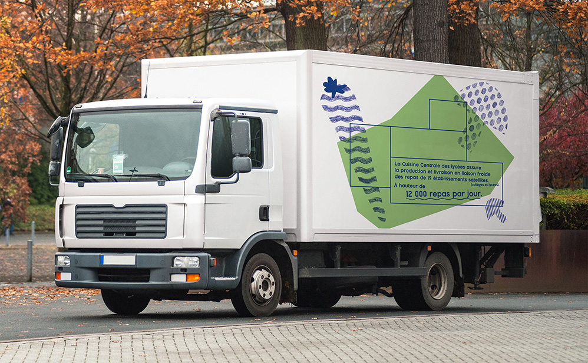
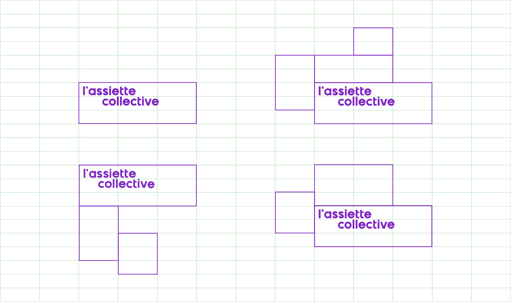
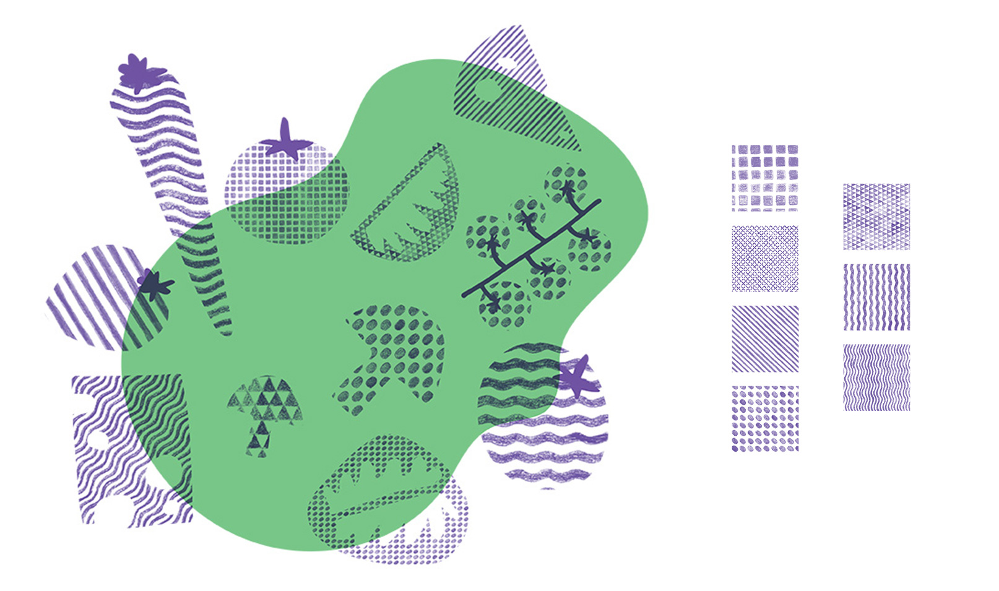
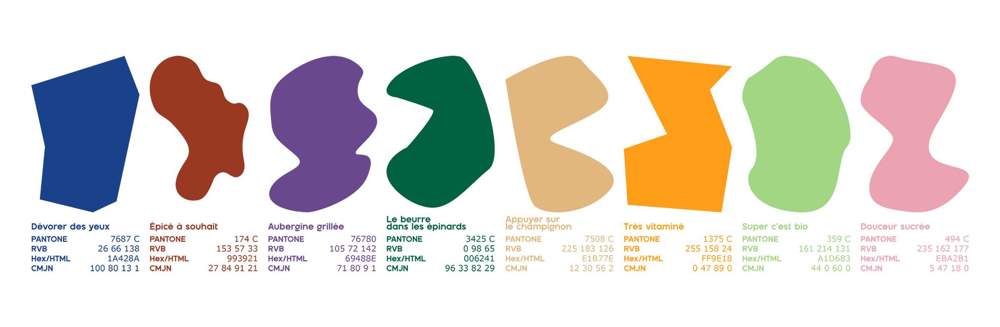
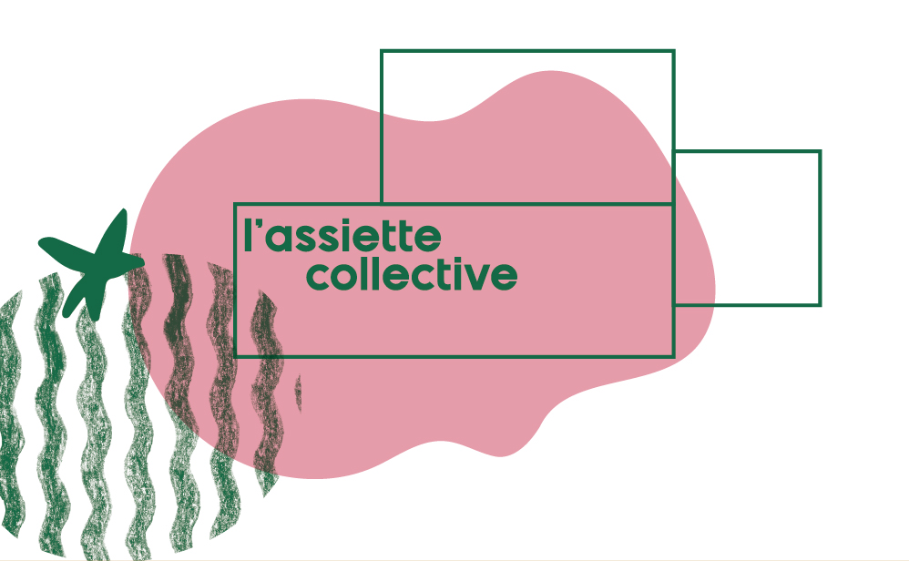
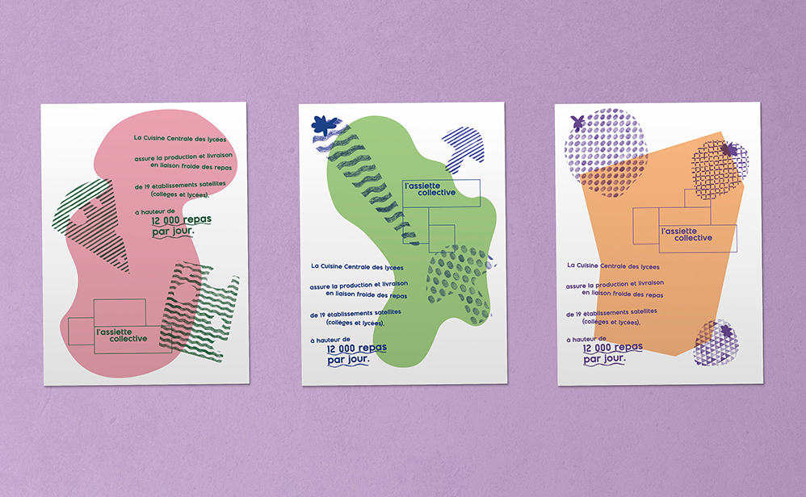
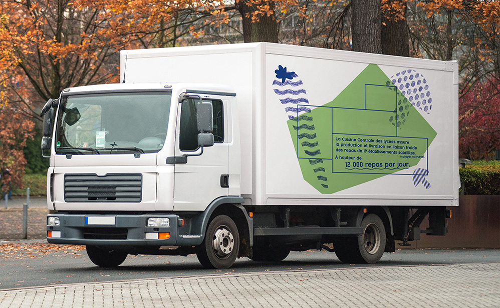